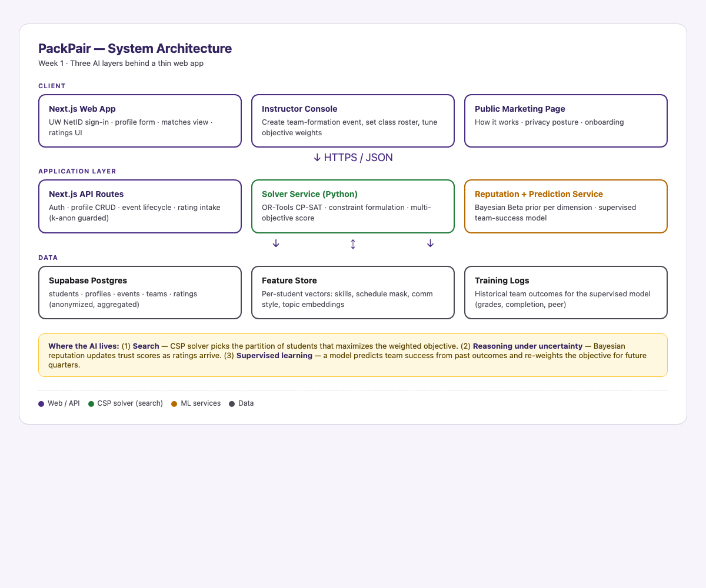

The problem we're solving
In every UW class with a group project, students either pick their friends — which clusters strong students together and leaves others behind — or instructors randomize, which mismatches skills and schedules. Neither approach uses what the system already knows about who works well together. PackPair fixes this with three layers of AI behind a single sign-in.
How it works
Three meaningfully distinct AI techniques, layered — not a side-chat wrapper.
Constraint-satisfaction search
Team assignment is an integer program: students × candidate-teams, with one-team-per-student and capacity constraints. Solved with Google OR-Tools CP-SAT. The objective weights skill diversity, schedule overlap, topic alignment, and communication-style fit.
Bayesian reputation
Each student carries a Beta(α, β) posterior per rating dimension —
participation, communication, technical contribution. New students start at the neutral prior
Beta(1, 1) (cold-start mitigation). Ratings update via conjugacy; the team
objective is bumped by the team's mean composite.
Supervised team-success prediction
After each project, peer-rating outcomes feed a supervised model that re-weights the search objective for the next quarter — so the matcher learns which feature combinations actually produced successful teams at UW, not which ones looked good on paper.
Safeguards
Proposal AI feedback flagged two risks. Both are mitigated in code.
| Risk | Mitigation | Where |
|---|---|---|
| Cold-start — no rating data on day one | Neutral Beta(1, 1) prior per dimension; every student starts at a known baseline that updates as ratings arrive | solver/reputation.py |
| Anti-gaming — 3-person team ratings are re-identifiable | k-anonymity guard (k = 5) on rolling rating aggregates; suppressed when the window is too small to anonymize | solver/privacy.py |
Architecture
Three real tiers, each owning one job. The AI brain is a separate Python service; the front-end + database stack do auth, CRUD, and Realtime.

Web: Next.js 16 (App Router, TypeScript) on Vercel · server actions, Realtime client. Database + auth: Supabase Postgres with Row-Level Security · Google OAuth (uw.edu) · Realtime. AI brain: FastAPI service on Render running the OR-Tools CP-SAT matcher, Bayesian Beta-prior reputation, and k-anonymity guard.
Demo & live URLs
The deployed app is real, end-to-end:
- packpair.vercel.app/demo — public interactive sandbox, no login. Click "New class → form teams" and the real CP-SAT solver runs live.
- packpair.vercel.app — the real app, real UW Google sign-in.
Or reproduce the solver locally:
git clone https://github.com/habibaElswify/packpair cd packpair python3 -m venv .venv && .venv/bin/pip install ortools scipy .venv/bin/python -m solver.demo_pipeline # all three AI layers, end-to-end .venv/bin/python -m solver.cli --n 30 # scaling test (30 students)
Tech stack
Next.js 16 React 19 TypeScript Supabase (Postgres) FastAPI Python 3.14 OR-Tools CP-SAT SciPy (Beta posteriors) Vercel / GitHub PagesTeam
Habiba Elswify
Aasiya Sathar
CSS 382 — Introduction to Artificial Intelligence · University of Washington · DYOP Final Project · Spring 2026